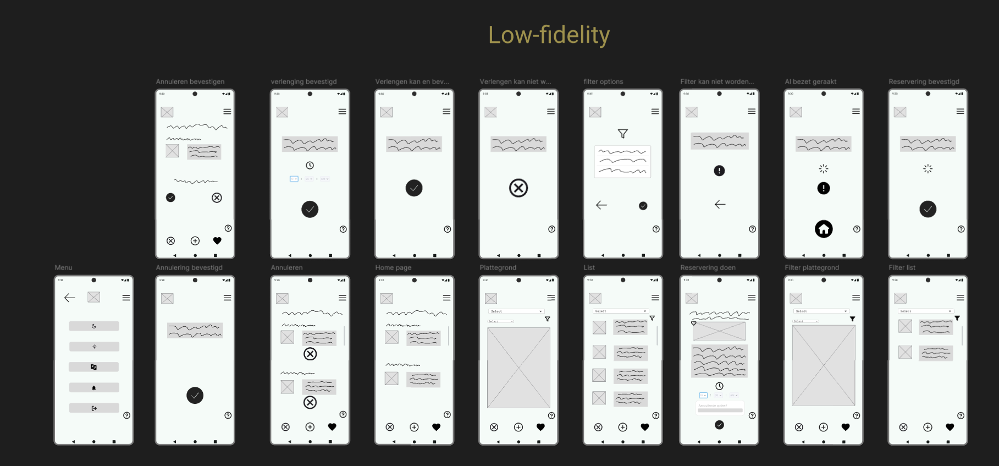
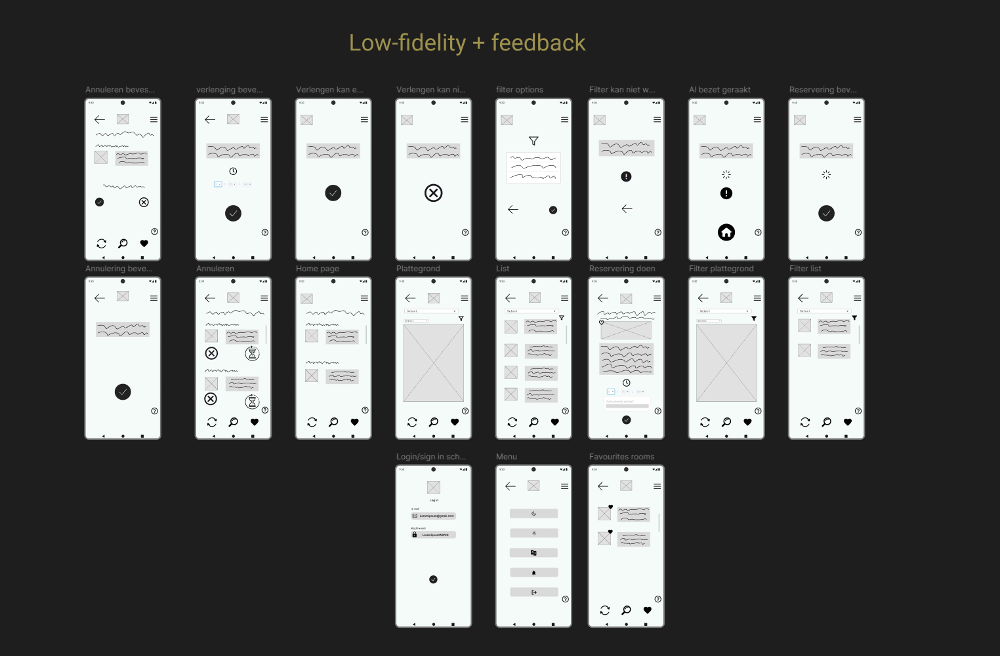
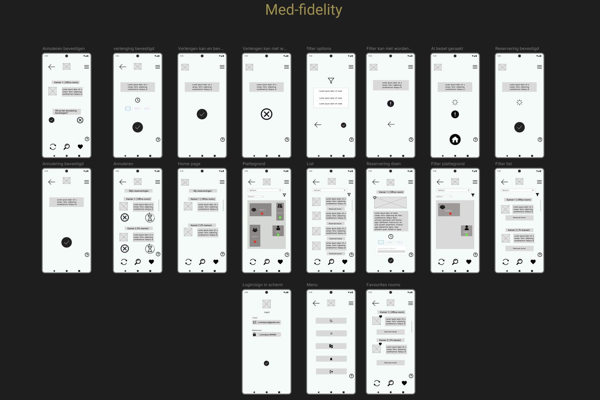

Project
Reserveringsapplicatie
In dit project heb ik gewerkt aan het ontwerp van een mobiele reserveringsapplicatie waarmee gebruikers eenvoudig ruimtes kunnen zoeken en reserveren.
Project
In dit project heb ik gewerkt aan het ontwerp van een mobiele reserveringsapplicatie waarmee gebruikers eenvoudig ruimtes kunnen zoeken en reserveren.
Fase 1
In de eerste fase van dit project heb ik een low fidelity ontwerp gemaakt van een reserveringsapplicatie voor gebruikers die eenvoudig ruimtes willen zoeken en reserveren.
In deze fase lag de focus op de basisstructuur, de benodigde schermen en de gebruikersflow. Wat ik hiervan heb geleerd, is dat een goed ontwerp begint met een duidelijke en logische basis.
Mijn leerdoel was om beter te worden in het structureren van een applicatie en het uitwerken van de route die een gebruiker doorloopt.

Fase 2
Na de eerste low fidelity fase heb ik feedback ontvangen op mijn ontwerp en deze verwerkt in een verbeterde versie. Door deze feedback kon ik beter zien welke schermen duidelijk waren en welke onderdelen nog aangepast moesten worden.
In deze fase heb ik vooral gewerkt aan het verbeteren van de gebruikersflow, de indeling van de schermen en de duidelijkheid van de navigatie.
Wat ik hiervan heb geleerd, is dat feedback helpt om een ontwerp sterker en gebruiksvriendelijker te maken.
Mijn leerdoel in deze fase was om feedback op een goede manier te verwerken en mijn ontwerp verder te ontwikkelen op basis van verbeterpunten.

Fase 3
Na het low fidelity ontwerp en de ontvangen feedback heb ik het concept verder uitgewerkt in een medium fidelity ontwerp. Hierbij heb ik de schermen verder ingevuld en de navigatie duidelijker gemaakt.
De focus lag op gebruiksvriendelijkheid, schermindeling en functionaliteit. Wat ik in deze fase heb geleerd, is hoe belangrijk het is om informatie overzichtelijk te presenteren en een applicatie logisch op te bouwen.
Mijn leerdoel was om mijn vaardigheden in interface-ontwerp en gebruikersgericht denken verder te ontwikkelen.

Fase 4
In de laatste fase heb ik met mijn team het ontwerp uitgewerkt tot een high fidelity prototype. Hierbij heb ik visuele details toegevoegd, zoals kleuren, iconen en afbeeldingen, zodat een realistisch beeld ontstond van het eindproduct.
Wat ik hiervan heb geleerd, is dat visuele vormgeving veel invloed heeft op de gebruikerservaring en de uitstraling van een applicatie. Mijn leerdoel was om functionaliteit te combineren met een professionele en aantrekkelijke vormgeving.